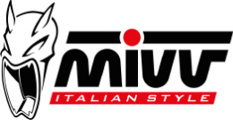

Double Gun
No veas como tira
BIOGRAFÍA
En el origen de todo está una gran pasión: los motores. Es el año 1970; el lugar, la zona industrial de la provincia de Teramo, en Abruzzo. Allí nace la Metal Industria Val Vibrata, conocida enseguida como MIVV. Las dos ruedas están todavía lejanas: empezamos produciendo solo escapes para coches y lo hacemos durante más de veinte años, con un buen éxito, tanto que en 1982 y en 1988 construimos la segunda y la tercera planta de producción. En aquellos 25 mil metros cuadrados se oye el eco de otro estruendo, el de las motos. Estamos en los años Noventa y nuestra empresa empieza a flanquear la producción de escapes para motos a la de escapes para automóviles.
LINK
